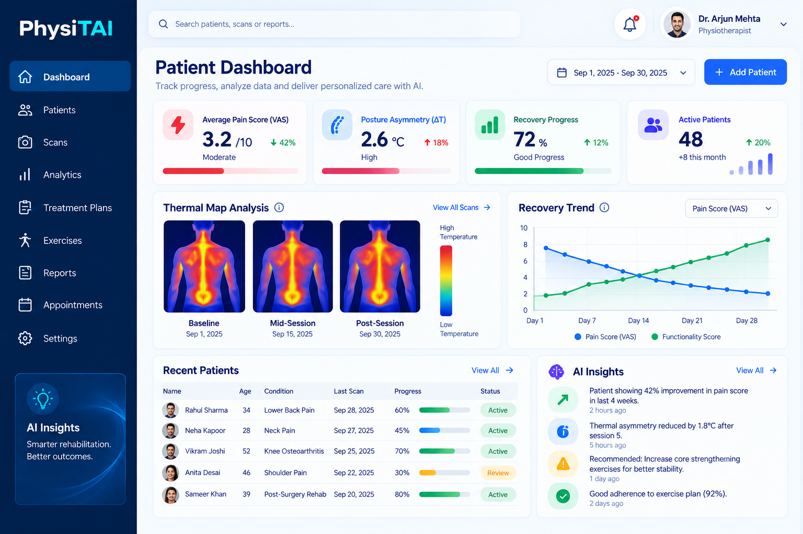
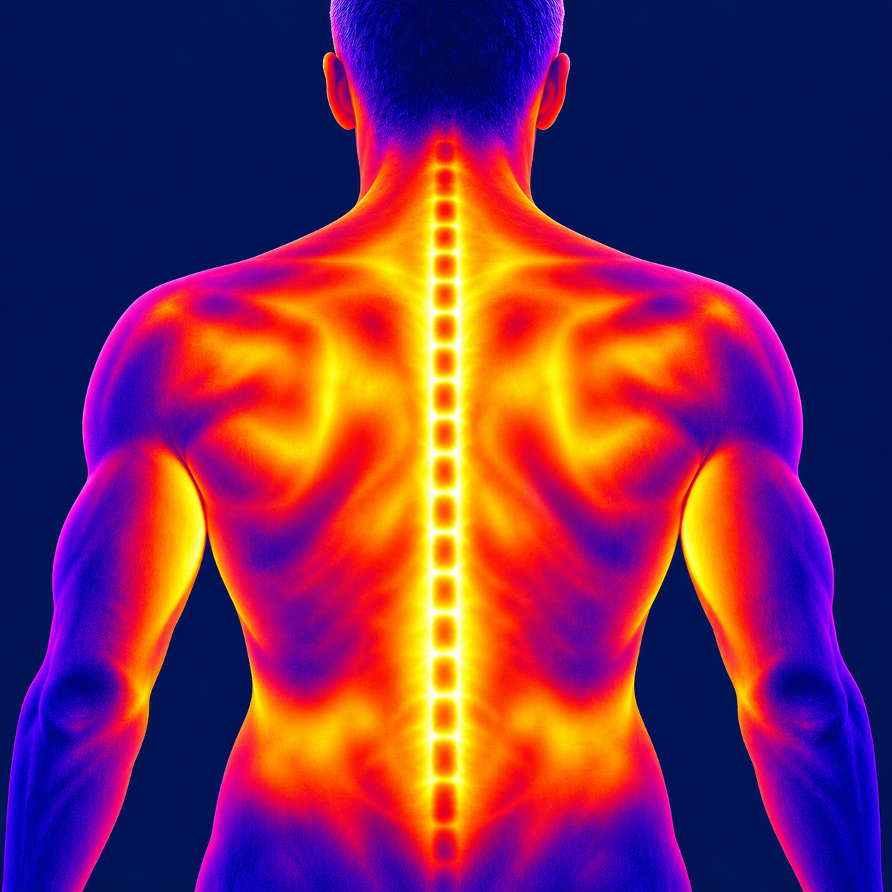

Recovery is measured with subjective scales and manual notes, which leads to inconsistent outcomes and slower results.
The AIIR-Phys protocol runs alongside the session, from baseline scan to discharge metrics.


PhysiTAI captures high-resolution thermal data and applies AI to detect inflammation, asymmetry, and perfusion patterns. It turns what clinicians feel into biomarkers they can measure.
Targets based on the clinical rationale behind objective, data-driven rehabilitation.
Book a demo and see how objective rehabilitation works in your setting.